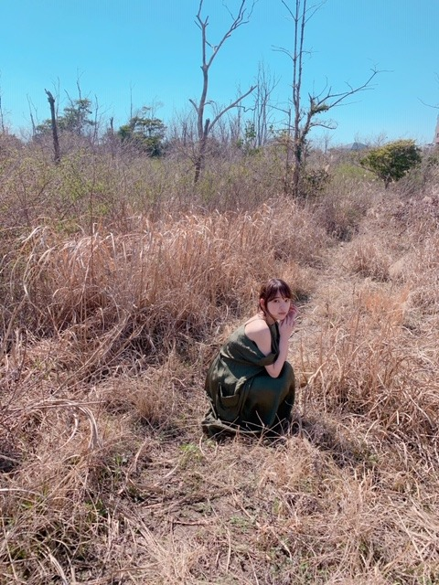
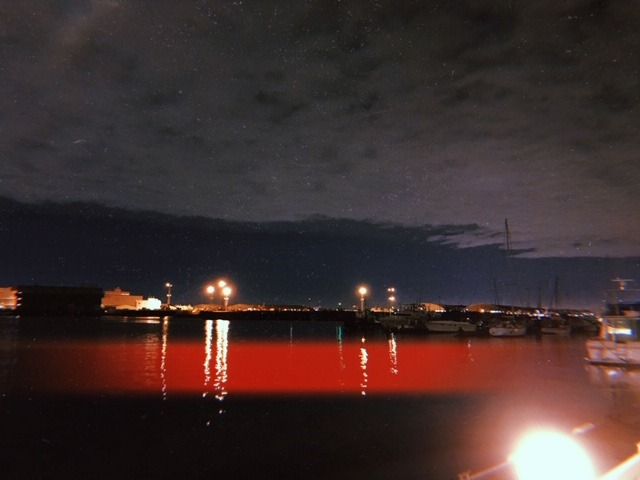

2019/0410Wed折りたたみ式ピザ
プティくんとお昼寝をしていたらお母さんに撮られてました
今日発売 ソロ表紙巻頭「blt graph. vol.42」
4/12 「ar」
4/18 ソロ表紙巻頭「週刊少年チャンピオン」
発売します！
blt graph.は初めての表紙でした！
ずっと写真集みたいに綺麗だなぁと思っていたので嬉しかったです✨セブンネットで予約をするとランダムでポストカードが付いてくるみたいなので是非

チャンピオンさんは久しぶりの表紙！グラビアの隣に書いてあるアンケートみたいなのが毎回答えるのが楽しくて密かな楽しみ。笑
ピンクのオフショルワンピース衣装がお気に入りです
みてください〜
TV
4/17 水曜深夜24:59〜
「遊戯みたいにいかない。」第1話ゲスト出演
4/19 金曜0:00〜配信開始
dtv「遊戯みたいにいかない。」第1話ゲスト出演
地上波版とdtv配信版2つに出させていただきます！
2話とも観ていただけるとより楽しめます✨
この間、幼稚園からの付き合いの親友と
ご飯を食べに行きました〜
私は友達にも家族にもメンバーにもスタッフさんにもファンの人にも恵まれていて、本当に幸せだなぁと実感する毎日です
乃木坂に入ってから、より人が好きになりました
そんな素敵な人達に私から何ができるか...
ずっと考えています
幸せを貰ってばかりでは情け無いので私からいろんな人に幸せを与えられるような強い人にならなくては！
それはきっと乃木坂の活動から！頑張ります^ ^
[ ホットギミック 今日の1枚 ］

この日は夜なのにたくさん雲が見えたので
風が冷たくて寒い〜って言いながらも動く雲をずっと見ていました
間宮さんが羊？みたいな可愛らしい湯たんぽをスタッフさんから借りてずっと持っていたのも印象深いです
撮影後、スタッフさん達みんなでハンバーガーを食べたのも覚えています
このシーンは私もお気に入り
原作にもあるんだ
6/28公開です
ではではは


コメント(316)
レコメン聞いたよ今週も楽しかった、
来週は乃木坂祭り、楽しみすぎですね。
チャンピオン、アルバム発売、こちらも楽しみすぎ。
ブログ更新ももちろん楽しみ。
俺はずっと未央奈を応援するよ。
またね
アメリカではストーリーが脚色されてリライト強めらしいからあんまり歴史的に
フィードバックしてないから、グリブクは難しい見方と解釈されてるみたいです。
因みに、強い人へのなりたいメッセージが強いテーマの初めての女性主人公のマーベル映画シリーズのキャプテン・マーベルはあの宣伝したDC映画のワンダーウーマンを興行記録を超えて歴代女性ヒーロー映画No.1らしいし、何よりも、励みになるような心揺さぶる友情物語になっているから、
こちらもげきおしのオススメ作品です。！！！
特に主人公キャロルと行動を共にするオレンジ猫のグースが最強にキュートだから癒された！！！
では今日も頑張って行きましょう・・・。
ホットギミックもだんだん近づいてきて楽しみだ
寝顔も可愛いです
グリーンブック見たくなったよ。
未央奈にくっついてるプティくんが羨ましい。
人に恵まれていると感じられる未央奈って素敵だと思う。
物事は捉え方次第で良い風にも悪い風にも見えてくるから
前向きなものの見方ができるって素敵なことだよ。
昨日ののぎおびもレコメンも良かった。
ずっと応援してるよ！
グリーンブック面白そう.*･ﾟ
すでにチキン食べたい！
チャンピオンのアンケート
チェックするね！
活躍してる堀ちゃん最高だ～
いつも、いつまでも応援してるから
寝顔かわゆいです
何かと野球部が絡む放送でしたねー。
未央奈ちゃんがマネージャーやってたら、どうなってたんでしょうね？
ひょっとしたら、乃木坂とは違う人生を歩んでた、なんてこともあるのかなぁ☆
ももんが
堀ちゃんもワンちゃんも寝顔良いね
仲良しさんやん(笑)
映画や小説などでいろんな事を思い感じるって良いと思いますよ。
いろんな意味で幅が広がると
映画はホットギミック楽しみやね。
男前男子君達も共演者も仲良しさんみたいでエエやんか。
あと、乃木坂の事❗
新しい乃木坂❗
白石さんやいくちゃんも勿論やけど、飛鳥ちゃんはじめ、堀ちゃん、与田ちゃん、美月ちゃん、桃ちゃん そして４期生。
切磋琢磨して頑張ってほしいです。
誰がセンターでもチームワークの乃木坂でまだまだこれからも上り坂やで✌
頑張りや❗
ではではまたね。
体調気をつけてね。
ほなね、堀ちゃん
…ピザ か。ピザが急に食べたくなてきた
はやくホットギミック見たい〜！
これからも笑顔でいてね！！
今日から発売されたスターバックスのストロベリーのフラペチーノ美味しいよ。
イチゴ一色のフラペチーノなんだよ！
レッドとホワイトの二種類があるんだけど、俺はレッドの方が好き！。今日飲んだけど笑
ホットギミックの公開が近づくにつれて、未央奈が雑誌に載ったり、テレビに出演する機会が増えると思うから、映画の公開も楽しみだけど、それも楽しみなんだよね。
情報解禁できるようになったら、ブログ等に書いてね。
ゴロ～
僕も周りの人達には恵まれているなぁって思うけど、いろんな人に幸せを与えられるような強い人にならなくては！って思った事は無かったなぁ
未央奈を見習うよ
こういう考えを持っているから、未央奈の周りには自然と人が集まるんだろうねぇ
さて、ホットギミックの公開が待ち遠しい今日この頃です
またねっ！
読むの楽しみや〜
プティちゃんと幸せそうですね。ペットちゃんといる時間は癒しですね
未央奈ちゃんが頑張って、心をこめて送って下さるブログがとても嬉しいですし、励みになります！それだけでも、自分の心はとても満足です。
いつもありがとう！
「blt glaph」の表紙、おめでとうございます。
たくさんの告知ありがとうございます。楽しみにしたいと思います。
「しあわせ」を感じる未央奈に癒されるのが私たち。ちゃんと「しあわせ」届けられていますよ、これからももっとたくさんの方に、幸せを運んでくださいね。
「のぎおび」、「レコメン」生放送、おつかれさまでした。
来週の「レコメン」は乃木坂特集週、特に水曜日は3人のメンバーとともにの放送、そして4thのアルバムの発売、楽しみでなりません。
昨日のレコメン聴けないで寝てしまった～!!
来週は絶対に聴きますぞ
プティ君の写真を見ると握手会に行きたいと思っちゃうでしょうが。寝ぼけ眼のプティ君、可愛い。
すごく美しいとおもいます。
グリーンブックは確か金つぶでもれなちが話してたなぁ♪
bltは実はさっきセブンネットで注文しました～
楽しみだなぁ
グリーンブック良い映画ですよね｡差別と闘おうじゃなく差別を乗り越えようって言ってるように感じました｡何十年後から見たら今の当たり前も､止めたほうがいい事だらけだったりするんですかね｡
ブログ2枚目の野生の堀未央奈は可愛いですね｡で､blt見ました｡
指先の綺麗さと爪のかわいさに目が行きつつ､堀さんの真っ白く美しい肌は光が映えるって思いました｡堀さんは光が当たるべき人です｡（日焼けしろじゃなくもっと世間に認められるべきという意味です｡）
吸い込まれそうな表情の表紙と､見透かすような表情の最初の見開きのと､笑った表情の最後のが特に好きです｡儚さ気丈さ明るさと幅が広くて感心します｡
３つのポスターの中の一番アップのを見てたら､どうしてこんなに整った顔なんだろうって見惚れてしまいます｡
インタビューも良かったです｡葛藤もありつつ前向きに未来を見るところが頼もしかったです｡以前､21世紀の女の子の中の山戸監督の作品を見た時に､山戸監督はやりたいこととやれることとやるべきことが一致してるような気がして､最近のインタビューを見てると堀さんもそれらが段々と一致しつつあるのかなって思います｡
なんにせよテーマがRe:bornだったので､これからもどんどん変化していけたらいいですね｡そういやちょうどレコメンでも毎回記憶消えてて毎日生まれ変わってるって話してましたね｡（つい先日のレコメン（毎週水曜日に生放送してるラジオ番組）で会うたびに前の記憶が無いという話をのりさん（前述のラジオ番組のパーソナリティ）としていました｡）
堀さんの笑顔は周りにも幸せをうつすので､もっと素敵な人達に出会えたらいいですね｡無理せず頑張ってくださいね｡いつも応援してます｡
こんばんは
こんな真夜中にすみません
bit graphまだ買えてないですけど表紙だけは本屋で見ました
ラインニュースにもなっていて、買いたいと思います
arも発売なのでチェックします
来週は、遂にアルバムも発売するし遊戯みたいにいかないもあるので楽しみにしてます
水曜日ののぎおびも YouTubeで観ました（平日は基本的に生配信を観るのが中々難しいのです）
まいやんにやきもちを焼いているのが、とても可愛かったです（まいやんも嬉しいけど、俺は堀ちゃんが一番嬉しいですよ）
最近コメントが遅いけどまた更新して頂けたらと思います
ありがとうございました
あと、もうすぐアルバム発売日だから今からもう楽しみにしているよ。
ラジオでもう「ゴルゴンゾーラ」も聴いたよ。心にすっごく響く良い曲だったよ。
ブログ更新してくれてありがとうございます！
きゃー見るの遅くなったー(´Д⊂ヽ
みおなちゃんずっと応援してます！
ももか No.11
白人と黒人の肌の色が違うことで、人を決めては行けないし、そう決めていた時代があることを知って胸が苦しくなりましたね。
人種差別の内容だけどコメディ要素もあってすごく面白かった！
トニーが奥さんへ送る手紙をドンシャーリーが指導しているシーンがとても印象的でした！
未央奈また映画観たら感想教えてほしいです‼︎
ホットギミック(^^♪ウキウキとまらんぜでばいころまるロンo(^-^o)(o^-^)oロンo(^-^o)(o^-^)oロン
映画好きは健在だね、最近観れてないな、観に行きたいな。。
寝顔が綺麗過ぎる…さすがお母さんショット！
未央奈は幸せを貰ってばかりではなく、ちゃんと周りに与えられていると思うよ。
だって握手会やライブに行くの楽しみだもん！！
ホットギミックの公開も楽しみにしてるね♪
トニーの奥さんのドロレスが素敵だった。
良い所もだらしない所も愛して幸せそうにしてて、心を奪われました。
みおなもあんな素敵な大人の女性になってね。
ホットギミックもたのしみやー！
チャァオ～～!☆彡
プティちゃんのお腹触りたぁ～～～⤴️⤴️い～～❕❤️❤️❤️❤️❤️笑顔
きっとぷにゅぷにゅして、温かいだろうなぁ～～⤴️⤴️❕❤️❤️❤️❤️❤️笑顔
☆大人しい、おすまし！より☆彡
ホントに大好き！
表紙もむっちゃ美人すぎる〜、
ホットギミック絶対見に行く〜!!!!!!!!
ブギーマンＶＳヘルレイザーのピンヘッドさんどっちが強いと思いますか？？
マジ可愛すぎ(ﾉ≧▽≦)ﾉ
これからも応援してるね
すごくよかったです。
未央奈ちゃんを見ていると毎日頑張ろうって思えます！
これからもっとたくさんいろんなところで未央奈ちゃんが見れるのが楽しみです！(^^)
グリーンブック気になってたから観に行こうかなー(*´꒳`*)
プティくんとの写真もありがと〜･:*+.\(( °ω° ))/.:+
お知らせもありがと〜
チェックしますねー（╹◡╹）♡
風立ちぬ(^^♪観ました!いいよね～(o≧▽ﾟ)oニパッ
！期待を裏切らない傑作です。
音楽もテンポアップにつながって楽しかった！！！数多くの映画賞を総なめにしたので！必見です。ではまた明日も頑張って下さい！！！
僕も年間２００本くらい観ます。ＢＳですけどね(笑)。
自分ひとりの経験なんて微々たるものですからね。
映画で追体験して、いろいろと考えられるのはいいね。
「グリーンブック」テーマは”差別”なんだね。
堀ちゃんが紹介してくれたから、是非観たいです。
"差別" 日本ではあまり感じないけど、海外にいくと
肌で感じること、ありますね。
「これって、バカにされてる？」って思う時、あります。
欧州は特に感じます。
日本人っていうか、アジア人に対してね。
堀ちゃんの好きなヘルシンキは
比較的、親日的なので、安心してください。
「カモメ食堂」とか、「ムーミン村」とか
ウエルカムな雰囲気でした。
皆に感謝できる堀ちゃん！
どんどん素敵な女性になっていくね。
コメントする